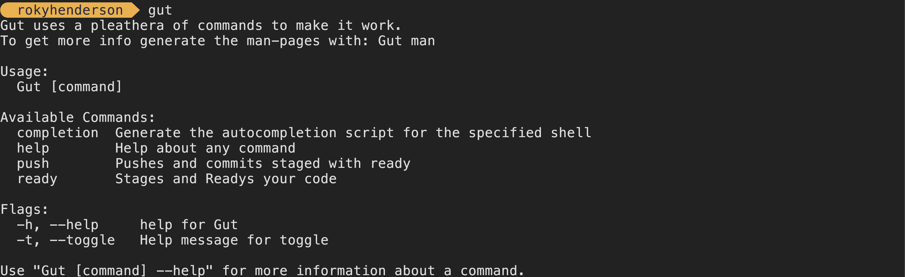

Gut: Main
This is Gut a git managment tool for people who don't like to spend their time diving into cmd tools.
Git is version control history cli and server-side project made by Linus Torvalds. Git is used by many projects you use from day-to-day as a developer, such as:
- Github
- Azure Repos
- Sublime Merger
Gut makes it easy to stage commits and push them with a simple CLI. Extremely basic and makes it easy to use git without learning annoying syntax that makes you want to rip your hair out.
Gut makes it easy to create your own git repos, whether it be locally or on a server it makes creating and monitoring your commits easy.
Gut is a play on git. The very nasty & horrible CLI that it is, now inherently git isn't a bad platform simply its exsisting CLI is.

Gut: The Basics
Even if your familiar with git you still can't use Gut straight out of the box.
Here are some guides that ive called the basics! If you need anymore help you can refer to the wiki.
:: Gut: The Basics: Installing
::: Gut: The Basics: Installing: Via CMD
You can either install Gut via the command-line or via our website. We suggest using the command-line for a cleaner & easier install. However if you are not comfortable using the command-line then thats ok, feel free too use one of our install buttons

Click on 'Copy Link Address' and now enter your CMD/Terminal. For me on MacOS I do that via SpotLight. Press  + [SPACE] . Now Type 'Terminal' & hit enter.
+ [SPACE] . Now Type 'Terminal' & hit enter.

Now type 'curl -O ' and paste in your link. And if need be replace 'curl -O ' with 'wget '

::: Gut: The Basics: Installing: Via Website
To Download Gut from our website press on the top option on the download page.
:: Gut: The Basics: Compiling
If your on MacOS then go to the MacOS section
Same for Linux, Go to the Linux section
::: Gut: The Basics: Compiling: Mac
First we need to install the 'Go Compiler'. We can do this with: 'brew install go' if you don't have brew, install it here.

Now 'cd' into 'gut' and run 'go build'. This will compile the file & install all nessacary packages.
::: Gut: The Basics: Compiling: Linux
Install the 'Go Compiler' with 'sudo apt install golang-go' or on Arch install with 'pacman -Sy go'
Now 'cd' into 'gut' and run 'go build'. This will compile the file & install all nessacary packages.
:: Gut: The Basics: Use
If all has gone right you should have a file called 'Gut' spat out at you. You can make this a command by placing it inside of your '/bin' folder or by using 'go install', however I prefer to use 'alias'. You can use and alias by adding the following to either your '.zshrc' or '.bashrc' file: 'alias gut='your/path/to/gut/file/here' '
Either way your finally here!! You can now get to using Gut!
Run it with 'Gut' and it should return this:
This is where suggest the wiki for more info on how to use Gut.